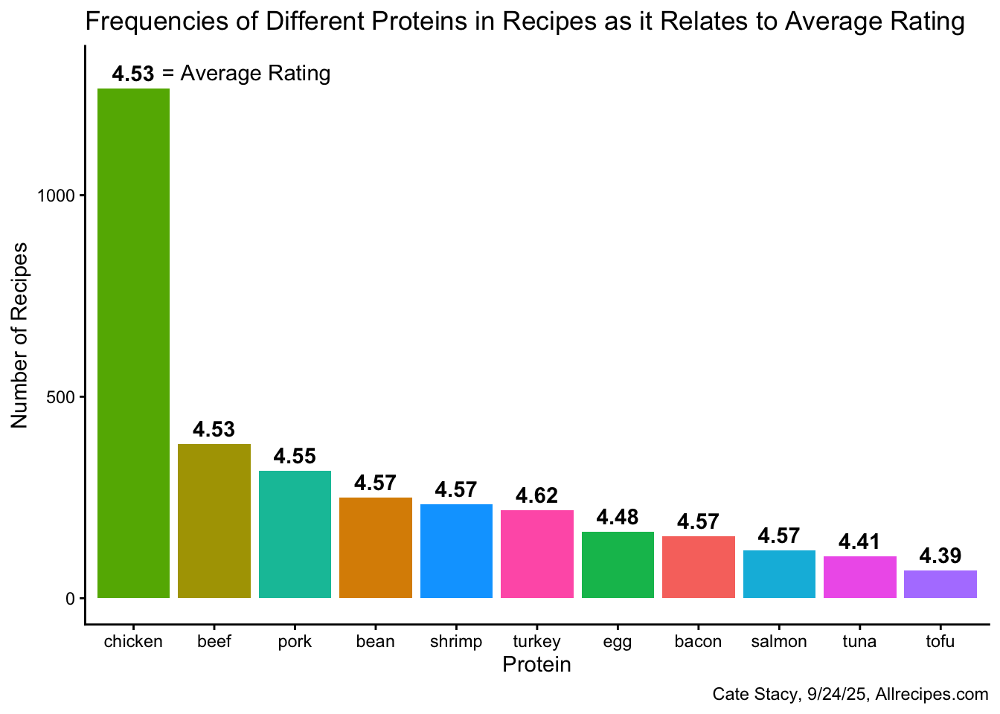
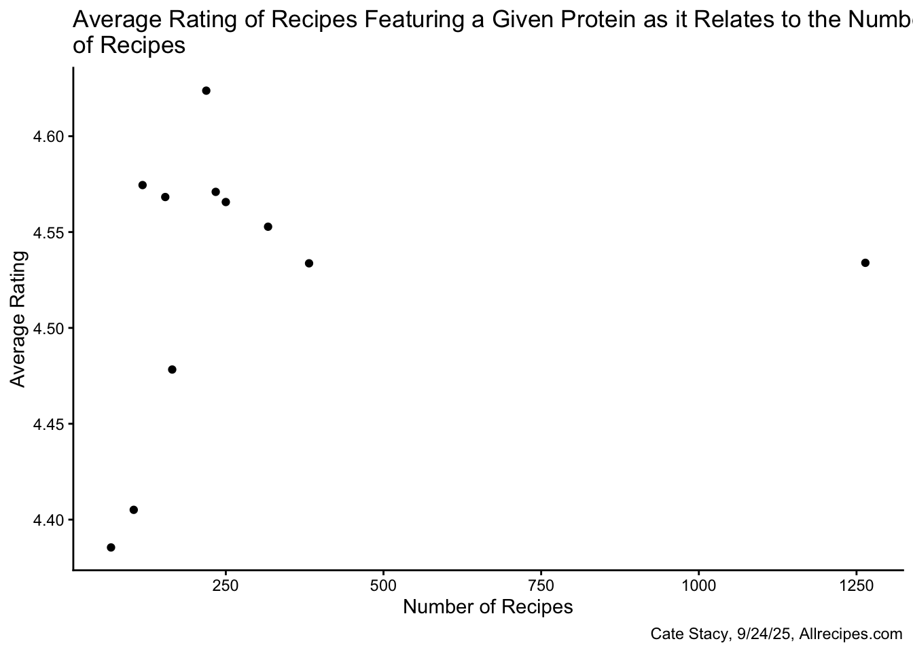
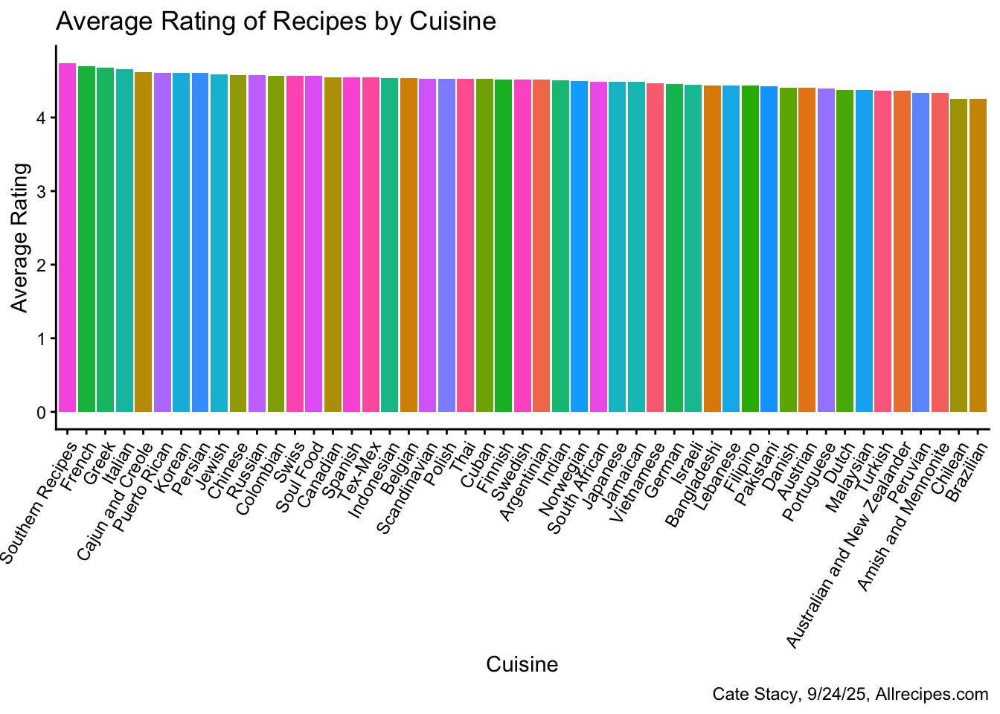
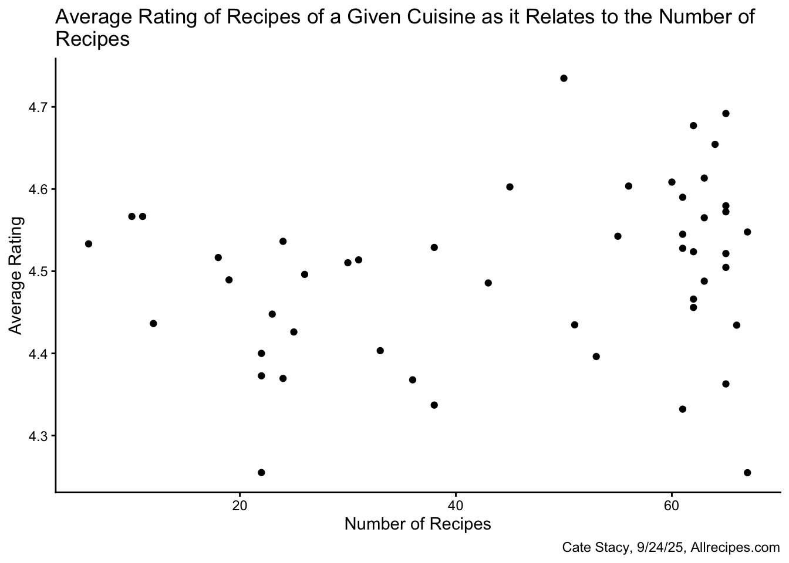
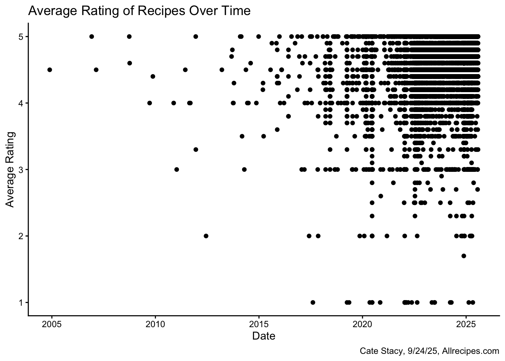
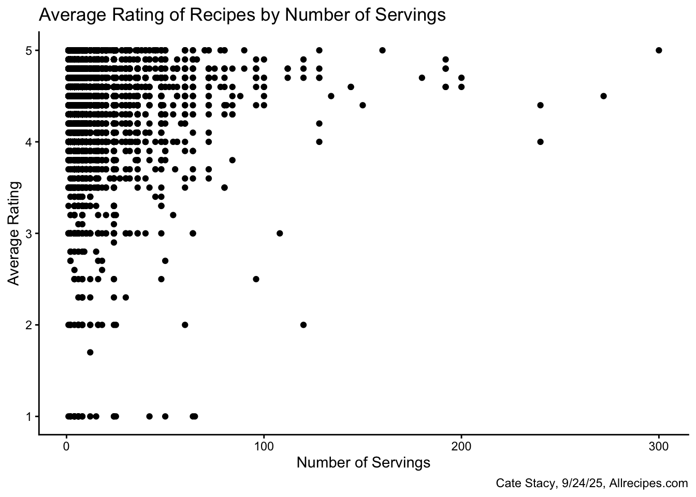
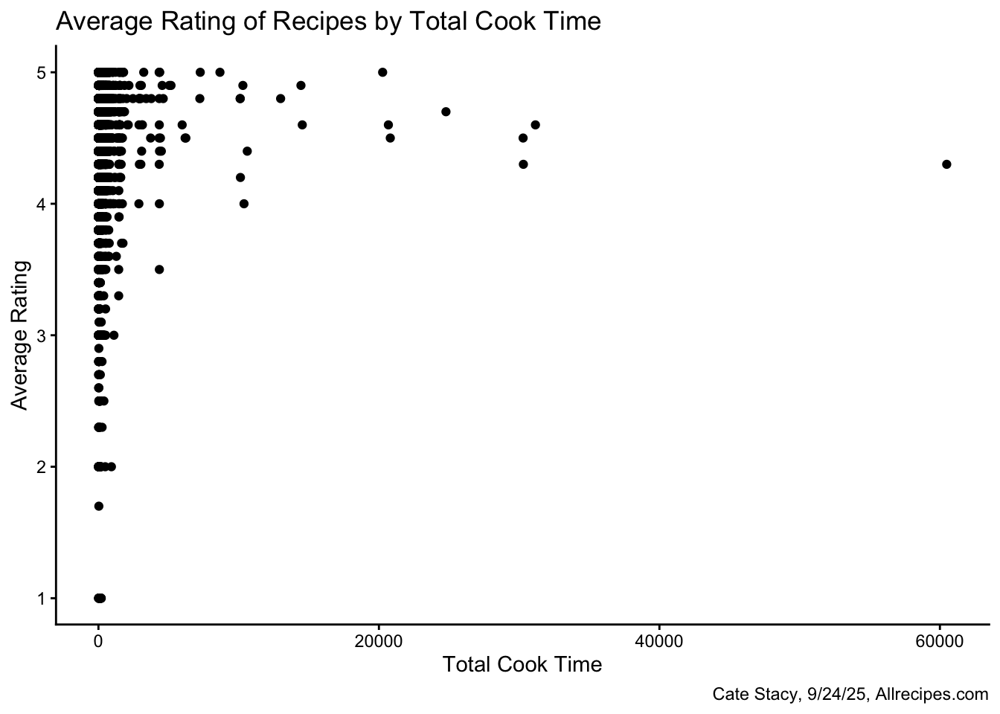

Homework 03
TidyTuesday Section (optional)
You can count work on this week’s TidyTuesday toward the exceptional work required for an A in the Homework component.
Explore the week’s TidyTuesday challenge. Develop a research question, then answer it through a short data story with effective visualization(s). Provide sufficient background for readers to grasp your narrative.
About the Data
The Tidy Tuesday data for the week of 9/16/25 comes from the tastyR package, which is a dataset assembled from Allrecipes.com. It contains two datasets: all recipes with 14,426 general recipes, and cuisines with 2,218 recipes characterized by country of origin. Some key variables in the datasets include nutritional information, ingredients, cooking times, and ratings.
Driving Question: What types of recipes have the highest ratings?
Protein
I was first interested in exploring whether the type of protein featured in a recipe impacts its rating. I used the str_detect function to find recipes that included any of 11 different proteins in their names. Then I determined the number of recipes with each protein and their average ratings. I compiled this information into a new dataset.
Code
chicken_sum <- all_recipes %>%
mutate(chicken = str_detect(name, regex("\\bchicken\\b", ignore_case = TRUE))) %>%
filter(chicken == TRUE) %>%
summarize(protein = "chicken", avg_rating = mean(avg_rating, na.rm = TRUE), n = n())
beef_sum <- all_recipes %>%
mutate(beef = str_detect(name, regex("\\bbeef\\b", ignore_case = TRUE))) %>%
filter(beef == TRUE) %>%
summarize(protein = "beef", avg_rating = mean(avg_rating, na.rm = TRUE), n = n())
pork_sum <- all_recipes %>%
filter(str_detect(name, regex("\\bpork\\b", ignore_case = TRUE))) %>%
summarize(protein = "pork", avg_rating = mean(avg_rating, na.rm = TRUE), n = n())
turkey_sum <- all_recipes %>%
filter(str_detect(name, regex("\\bturkey\\b", ignore_case = TRUE))) %>%
summarize(protein = "turkey", avg_rating = mean(avg_rating, na.rm = TRUE), n = n())
shrimp_sum <- all_recipes %>%
filter(str_detect(name, regex("\\bshrimp\\b", ignore_case = TRUE))) %>%
summarize(protein = "shrimp", avg_rating = mean(avg_rating, na.rm = TRUE), n = n())
egg_sum <- all_recipes %>%
filter(str_detect(name, regex("\\begg\\b", ignore_case = TRUE))) %>%
summarize(protein = "egg", avg_rating = mean(avg_rating, na.rm = TRUE), n = n())
tofu_sum <- all_recipes %>%
filter(str_detect(name, regex("\\btofu\\b", ignore_case = TRUE))) %>%
summarize(protein = "tofu", avg_rating = mean(avg_rating, na.rm = TRUE), n = n())
bean_sum <- all_recipes %>%
filter(str_detect(name, regex("\\bbeans?\\b", ignore_case = TRUE))) %>%
summarize(protein = "bean", avg_rating = mean(avg_rating, na.rm = TRUE), n = n())
bacon_sum <- all_recipes %>%
filter(str_detect(name, regex("\\bbacon\\b", ignore_case = TRUE))) %>%
summarize(protein = "bacon", avg_rating = mean(avg_rating, na.rm = TRUE), n = n())
salmon_sum <- all_recipes %>%
filter(str_detect(name, regex("\\bsalmon\\b", ignore_case = TRUE))) %>%
summarize(protein = "salmon", avg_rating = mean(avg_rating, na.rm = TRUE), n = n())
tuna_sum <- all_recipes %>%
filter(str_detect(name, regex("\\btuna\\b", ignore_case = TRUE))) %>%
summarize(protein = "tuna", avg_rating = mean(avg_rating, na.rm = TRUE), n = n())
# Combine all into one data frame
proteins <- bind_rows(
chicken_sum,
beef_sum,
pork_sum,
turkey_sum,
shrimp_sum,
egg_sum,
tofu_sum,
bean_sum,
bacon_sum,
salmon_sum,
tuna_sum
)I used the information in the proteins dataset to create a bar plot displating the number of recipes with each protein. I then annotated the plot with their average ratings.
Code
ggplot(proteins, aes(x = reorder(protein, -n), y = n, fill = protein)) +
geom_col() +
theme_classic() +
theme(legend.position = "none") +
geom_text(aes(label = round(avg_rating, 2), x = protein, y = n, vjust = -0.5, fontface = "bold")) +
annotate("text", label = "= Average Rating", x = 2.4, y = 1305) +
labs(title = "Frequencies of Different Proteins in Recipes as it Relates to Average Rating", x = "Protein", y = "Number of Recipes", caption = "Cate Stacy, 9/24/25, Allrecipes.com")
Chicken is by far the most common protein in the Allrecipes dataset while tofu is least common. Tofu also has the lowest average rating, however, the range in average rating is relatively small (0.23). Turkey, which displays medium frequency, has the highest average rating.
The relationship between protein frequency and average rating can be directly visualized using a scatterplot.
Code

As the number of recipes with a given protein increases, the average rating also appears to increase. Chicken, however, is an outlier as it has ~ 4 times as many recipes as the next most frequent protein but is rated in the middle.
Cuisine
Next, I was interested in exploring the relationship between cuisine and recipe ratings.
Code
pop_cuisines <- cuisines %>%
group_by(country) %>%
summarise(avg_rating = mean(avg_rating, na.rm = TRUE), n = n())
ggplot(pop_cuisines, aes(x = reorder(country, -avg_rating), y = avg_rating, fill = country)) +
geom_col() +
theme_classic() +
theme(legend.position = "none", axis.text.x = element_text(angle = 60, hjust = 1)) +
labs(title = "Average Rating of Recipes by Cuisine", x = "Cuisine", y = "Average Rating", caption = "Cate Stacy, 9/24/25, Allrecipes.com")
There does not appear to be a meaningful difference in recipe ratings across cuisines as the range of average ratings is quite small.
Code

Considering how the number of recipes in a given cuisine impacts the average rating also does not reveal any patterns, unlike the protein average rating vs. number of recipes scatterplot which displayed an upward trend.
Recipe Metrics
I also looked at the relationships between average rating and recipe specifications including the date published, number of servings, and cook time.
Code

Code

Code

None of these variables appear to be strong indicators of recipe ratings. There appears to be large range in average rating for the most common dates, numbers of servings, and cook times. Each of these three plots reflect that most recipes in this dataset are highly rated.